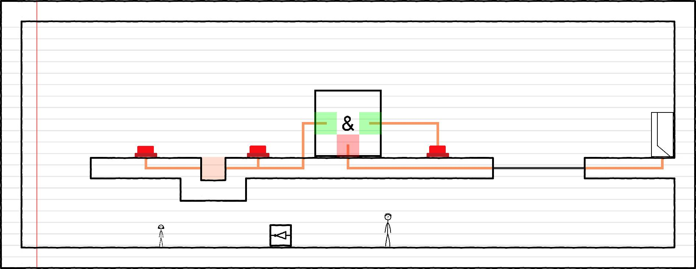
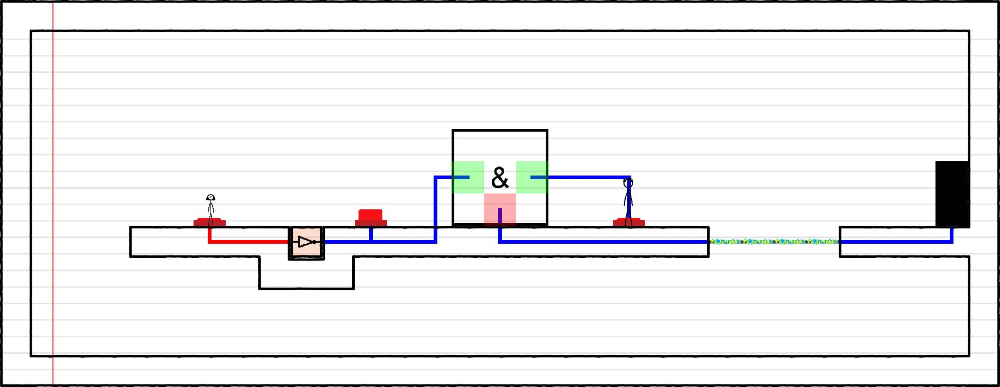

Pitch
Deux joueurs, deux signaux, un circuit à lire ensemble. En activant boutons, portes logiques et éléments mobiles, l'équipe doit router le signal correct vers la sortie.
Mécaniques principales
- Coopération locale à deux sur le même clavier.
- Propagation de signaux binaires dans un réseau logique.
- Objets manipulables comme la porte NON pour reconfigurer le niveau.
- Pièges électriques qui imposent timing et communication.
Extrait visuel: salle 1

